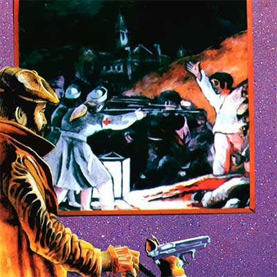
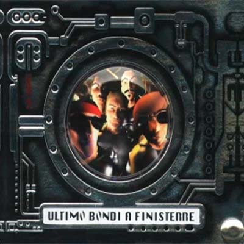

Discografia
-
1982
Demo
En 1982 Patricio Rey y sus Redonditos de Ricota grabó un Demo en los Estudios RCA que no llegó a conmover a los productores acartonados de la época.
Este demo sería el germen de Gulp, el primer disco de Los Redondos, que se editaria en 1985. Algunos temas son: Mariposa Pontiac,Superlogico, Un Tal brigitte Bardot, Nena Nena, Pura Suerte. -
1985
Gulp!A fines de 1984, Los Redondos se recluyeron en los estudios de grabación para concretar un viejo anhelo de la banda, tan largamente esperado por sus fans. A mediados de 1985, en forma absolutamente independiente, Gulp!, salió a la calle y se transformó en una prueba eficiente del poder de la banda. Algunos temas son: Barbazul versus el amor letal,La bestia pop, Roto y mal parado, Pierre, el vitricida, Unos pocos peligros sentatos.
-
1986
OktubreOktubre es el segundo álbum de estudio de Patricio Rey y sus Redonditos de Ricota.
Fue publicado el 4 de octubre de 1986 por el sello discográfico Wormo.
El álbum se caracteriza por un sonido que incorporó influencias del new wave y el post punk, y por su narrativa con elementos distópicos, inspirada por las revoluciones sociales históricas y el contexto bélico internacional de la Guerra fría, así como también del escenario político argentino en el período de la vuelta a la democracia. Algunos temas son: Fuegos de octubre,Preso en mi ciudad, Musica para pastillas, Semen-Up, Jijiji. -
1988
Un Baión Para El Ojo IdiotaUn baión para el ojo idiota es el tercer álbum de Patricio Rey y sus Redonditos de Ricota, publicado el 9 de mayo de 1988. Según el Indio Solari es una de las grabaciones que mejor capta el espíritu y la idea musical del grupo durante esos años. Algunos temas son: Masacre en el puticlub,Noticias de ayer, Aquella solitaria vaca cubana, Todo preso es politico, Vencedores vencidos.
-
1989

Bang! Bang! Estas LiquidadoBang! Bang!!… estás liquidado es el cuarto álbum de Patricio Rey y sus Redonditos de Ricota. Fue publicado el 7 de octubre de 1989. Como la convocatoria había crecido enormemente, la presentación oficial se realizó en Satisfaction durante cuatro noches, el 20, 21, 27 y 28 de octubre de 1989. Algunos temas son: Héroe del whisky,Rock para los dientes, La parabellum del buen psicópata, Un pacman en el Savoy, Nadie es perfecto.
-
1991
La Mosca Y La SopaLa mosca y la sopa es el quinto álbum de estudio de Patricio Rey y sus Redonditos de Ricota, publicado el 27 de octubre de 1991.
Fue presentado el 22, 23 y 24 de noviembre de 1991 en Autopista Center. En abril de ese año, durante un show del grupo en el mítico estadio Obras Sanitarias, una razzia policial detuvo ilegalmente y asesinó a Walter Bulacio, un joven menor de edad cuyo único delito era querer ver a su banda favorita. A partir de este suceso lamentable la prensa estigmatizó al grupo y lo tildó de violento. Algunos temas son: Toxi - Taxi,Fusilados por la cruz roja, Un poco de amor francés, Mi perro dinamita, Tarea fina. -
1992
En DirectoEn 1992 Patricio Rey edita En Directo, el único disco en vivo oficial del grupo. Fue publicado el 14 de diciembre de 1992. La decisión de publicarlo probablemente sea una respuesta al aumento de las grabaciones piratas que circulaban de mano en mano. El álbum incluye la canción Blues del noticiero, que no formó parte de ningún disco de estudio. Algunos temas son: Vamos las bandas,Criminal mambo, Todo un palo, Maldicion, va a ser un dia hermoso, Nuestro amo juega al esclavo.
-
1993
Lobo Suelto y Cordero AtadoEn 1993 Patricio Rey y sus Redonditos de Ricota sorprendió con un disco doble llamado Lobo suelto Cordero atado. El séptimo álbum de Patricio Rey y sus Redonditos de Ricota fue publicado el 4 de octubre de 1993. Se presentó en el Estadio Huracán el 19 y 20 de noviembre de 1993, en una fecha doble. Las canciones se convirtieron rápidamente en himnos de la banda. Algunos temas son: Invocación,Sorpresa en Shangai, Rock para el negro Atila, Shopping disco-zen, Un ángel para tu soledad.
-
1993
Lobo Suelto y Cordero AtadoEn 1993 Patricio Rey y sus Redonditos de Ricota sorprendió con un disco doble llamado Lobo suelto Cordero atado. El séptimo álbum de Patricio Rey y sus Redonditos de Ricota fue publicado el 4 de octubre de 1993. Se presentó en el Estadio Huracán el 19 y 20 de noviembre de 1993, en una fecha doble. Las canciones se convirtieron rápidamente en himnos de la banda. Algunos temas son: Yo caníbal,Ladrón de Mi Cerebro, ¡Es hora de levantarse, querido! (dormiste bien?), Perdiendo el tiempo, Caña Seca y un Membrillo.
-
1996
LuzbelitoLuzbelito es el octavo álbum de estudio de Patricio Rey y sus Redonditos de Ricota, publicado el 1 de agosto de 1996.
Es un disco conceptual que, a través de la idea de un ficticio hijo del demonio llamado Luzbelito, juega con las ambigüedades de las creencias y comportamientos humanos desde distintos puntos de vista.
La edición argentina de la revista Rolling Stone ubicó al disco en el puesto 88 entre los 100 mejores discos del rock nacional. Algunos temas son: Luzbelito y las sirenas,¡Cruz diablo!, Ella baila con todos, Fanfarria del Cabrío, Nuotatori Professionisti. -
1998

Ultimo Bondi A FinisterreÚltimo bondi a Finisterre es el noveno álbum de estudio Patricio Rey y sus Redonditos de Ricota, lanzado el 18 de noviembre de 1998.
Fue presentado el 18 y 19 de diciembre de 1998 en el Estadio Racing Club de Avellaneda. La grabación presenta un giro en el tradicional sonido del grupo, con canciones más melódicas, y mayor uso de las posibilidades que brinda el estudio y las computadoras en la confección de una canción de rock. Algunos temas son: Estas frito Angelito,Gualicho, Pogo, Alien Duce, Drogocop. -
2000
Momo SamplerMomo Sampler es el décimo álbum de estudio de Patricio Rey y sus Redonditos de Ricota, publicado el viernes 17 de noviembre de 2000. Fue presentado el 22 y 23 de abril de 2001 en el Estadio Centenario de Montevideo. Sigue la línea de su antecesor, en donde la banda busca nuevos sonidos y formas para sus temas. Algunos temas son: El templo de Momo,Morta Punto Com, La Murga de los Renegados, Dr. Saturno, La Murga de la Virgencita.